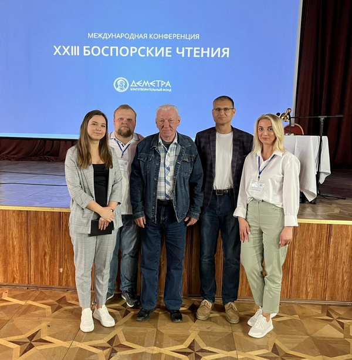
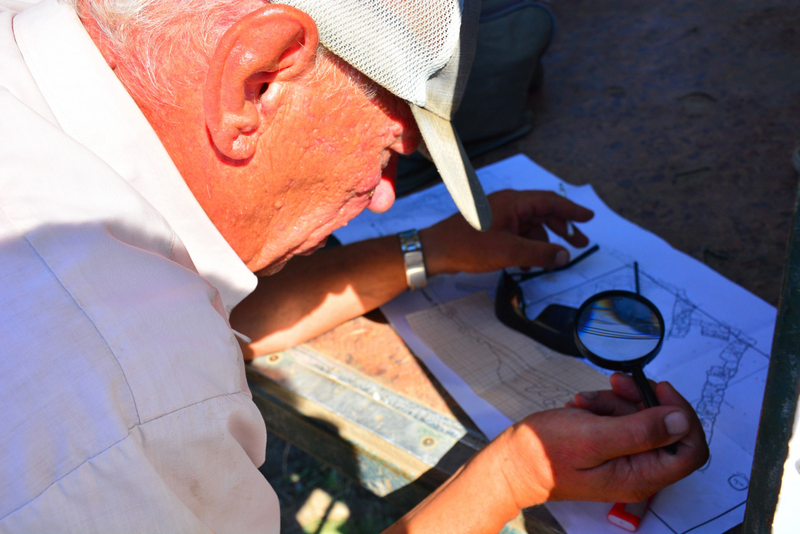

мировоззрения, художественно-эстетического развития качеств личности, нравственного развития, составными частями которого являются формирование патриотизма, культуры межнациональных отношений и толерантности, а также, воспитание музейной культуры, включающей в себя уважительное отношение к памятникам истории и культуры, к созидательному труду человека.
Археологические исследования за период 2018-2022 гг. проводились по двум направлениям.
Одно из них связано с многолетним плановым исследованием городища «Белинское» (II-VI вв. н.э.) и его некрополя в Восточном Крыму (нач. В.Г.Зубарев). На первых этапах своего развития Белинское городище являлось одной из самых мощных крепостей Боспорского царства возведенной при участии римских инженеров. Материал, полученный в ходе раскопок городища «Белинское» и его некрополя позволяет получить необходимую археологическую базу под сообщения письменных источников античных авторов, предложить новые, аргументированные версии исторических событий в наиболее сложное для Боспорского царства кризисное время.
Второе направление связано с археологическим исследованием Аджиэльской балки на Керченском полуострове и в частности с раскопками открытого тульскими учеными совершенно нового памятника археологии «Аджиэль I» (нач. С.В.Ярцев). Материал, полученный из раскопок памятника археологии «Аджиэль I» позволяет в деталях восстановить грандиозную оборонительную систему западных рубежей Боспорского царства в эпоху царя Асандра (47-17 гг. до н.э.), в период противостояния его с Римской империей, а также реконструировать культурно-исторический ландшафт этой части Восточного Крыма.
Проведенные в 2018-2022 гг. работы (подготовка карты аномалий индукции магнитного поля,
проведение археологических разведок и раскопок в Аджиэльской балке), также позволяют использовать собранные данные для дальнейшего уточнения характера и проверки гипотез антропогенной эволюции ландшафта в местах расположения античных поселений и укреплений на западных рубежах Боспорского царства. В первую очередь, исследования 2018-2022 гг. в области антропогенного ландшафтогенеза, позволили в значительной степени продвинуться в понимании механизма процесса антропогенных изменений, то есть изменений, происходящих под воздействием человека и приводящих к антропогенным сменам, а на этой основе – возраста антропогенно-производных ландшафтных комплексов.
Полученные результаты будут использованы для дальнейшей реконструкции исторического
процесса в регионе, начатой в наших предыдущих исследованиях. Использованные методы исследования и полученные результаты также могут быть применены, как при изучении аналоговых объектов в Восточном Крыму, так и за его пределами. Изучение данного вопроса позволит пролить свет на ряд «темных» моментов истории Европейского Боспора (Керченского полуострова), начиная от периода каменного века и поздней бронзы, античной эпохи, и вплоть до времени раннего средневековья. Кроме того, полученные результаты могут быть использованы при определении охранных территорий историко-культурных ландшафтов
и в вопросах музеефикации отдельных
археологических объектов.
Полученные на основании анализа имеющихся картографических материалов, данных аэро и космической съемки, литературных и архивных источников, магнитных и археологических разведок и археологических раскопок сведения, предполагается использовать при проведении дальнейших комплексных исследований в урочище «Аджиэль».
 Монографии:
Scopus:
ВАК:
4. Защищенные диссертации:
В 2020 г. в рамках работы учебно-научной лаборатории «Палата Древностей» состоялась успешная защита докторской диссертации А. А. Клейменова «Полководческое искусство Александра Македонского: использование автономных боевых соединений».
5. Гранты, гос. задание:
1. В 2014-2016 гг. работа проводилась в рамках НИР “Структурно-пространственное изучение памятников как парадигма археологического исследования истории конкретного региона (на примере урочища “Аджиэль” и городища “Белинское”)” в
Тульском государственном педагогическом университете им. Л.Н. Толстого (задание № 2014/389 Минобрнауки России, № НИР 1799).
2. В 2017-2019 гг. работа проводилась в рамках НИР «Археологические и геофизические изыскания на археологических памятниках Аджиэльской балки для проверки гипотез о характере антропогенного воздействия в период голоцена» (Задание № 33.6496.2017/8.9 Минобрнауки России);
3. В 2022-2023 гг. работа ведется в рамках гранта РНФ № РНФ № 22-28-00056 от 28.12.2021 г. «Салтово-маяцкая культура западного и восточного Крыма. Общее и особенное».
4. В 2023-2024 гг. работа введется в рамках гранта РНФ № 23-28-01665 «Этнокультурное взаимодействие в этноконтактной зоне Восточного Крыма в первой половине I тыс. н.э.».
created with
Website Builder Software .